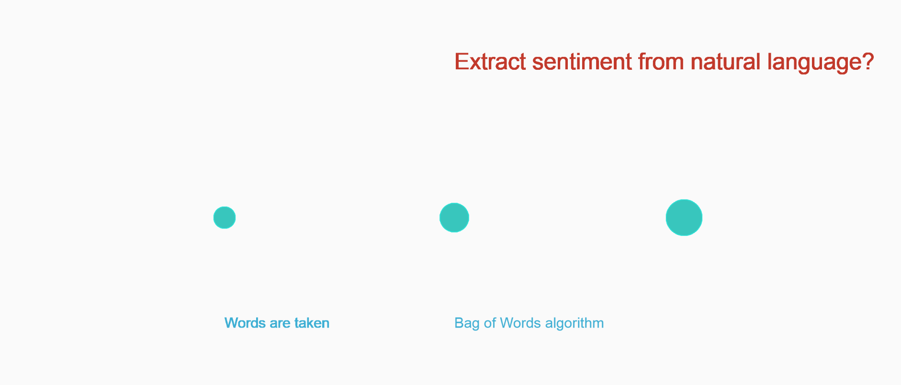

FINAL PROJECT - Idea & Methodology
-
Proposal / Idea
The idea for this project started out with just wanting to visualize algorithms that play a role in our everyday life. I started thinking about algorithms in different domains and sectors and was most drawn to the algorithms used in the finance sector. -
Conception
My curiousity to understand the abstractions behind some of these algorithms lead to wanting to represent one to two iterations of it in my final demo. I tried to research algorithms used in banks, stock markets, mutual funds and insurance. I found that the algorithmic trading practices in stock markets were quite fascinating due to its dynamic nature. I tried to pick a simple and visually stimulating algorithm that is used in the stock market. As I read more on the different trading strategies deployed in these systems, I found that sentiment analysis could be a good topic to showcase. I found some
-
Design Process
-
From the beginning I wanted to represent a story within one-page with different interactive components.
I also wanted to explore the possibility of using 3D representation/WEBGL materials in this project (which I did try but WEBGL for p5JS support is very poor and still in beta).


This was an initial design for showing the different steps in the sentiment analysis algorithm which I broke it down to